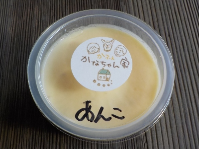

かなちゃん家のプリンはちょっと変わってる。
2026/11/03

カラメルの部分があんこになったプリンです。お店の人が言うには発酵もしているそうです。
一口目は一体感がなくてちょっと薄いなと思ったんですが、2口目から段々味が強く感じました。
素朴な卵のプリン味とアンコの味がそれぞれ美味しかったです。こういうの食べると家でプリンを作りたくなりますね。
今日は田部美術館で販売していたので、美術館のベンチに座ってお庭を見ながらのんびり食べました。
島根県松江市東出雲町下意東916-26
2026/11/03

カラメルの部分があんこになったプリンです。お店の人が言うには発酵もしているそうです。
一口目は一体感がなくてちょっと薄いなと思ったんですが、2口目から段々味が強く感じました。
素朴な卵のプリン味とアンコの味がそれぞれ美味しかったです。こういうの食べると家でプリンを作りたくなりますね。
今日は田部美術館で販売していたので、美術館のベンチに座ってお庭を見ながらのんびり食べました。